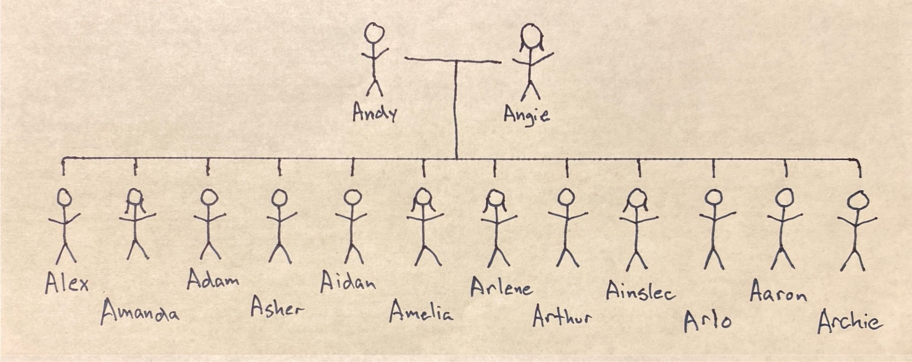

← Return to Families
Andrew and Angela Moad Family

Andrew James Moad
- Born: 12 January 1979 at 4:50 am at Welborn Baptist Hospital in Evansville, Vanderburgh, Indiana, USA
- Died: Living
- Buried:
- Baptized: 25 Feb 1979 at St. Paul's UCC German Township by Reverend Eugene Bickel
- Attended: Cynthia Heights Elementary School K-5th
- Attended: Helfrich Park Middle School 6th-8th
- Confirmed: 27 March 1994 at St. Paul's UCC German Township
- Graduated: F.J. Reitz High School 1997
- Married: Angela Dawn (Schneider) Moad 2000
- Graduated: Indiana University (B.S. Chemisty with Honors) 2001
- Graduated: Purdue University (PhD Analytical Chemistry) 2006
- Ordained as Church Elder: 16 November 2025
Angela Dawn (Schneider) Moad
- Born: 5 September 1979 at 10:05pm at St. Mary's Hospital in Evansville, Vanderburgh, Indiana, USA
- Died: Living
- Buried:
- Baptized: 16 December 1979 at Messiah Lutheran by Pastor Gerald Schumocker
- Attended: New Bethel Baptist Church Kindergarten
- Attended: Evansville Lutheran School 1st grade
- Attended: Daniel Wertz 2nd-5th
- Attended: Perry Heights Middle School 6th-8th
- Confirmed: 4 April 1993 at Messiah Lutheran
- Graduated: F.J. Reitz High School 1997
- Married: Andrew James Moad 2000
- Graduated: Indiana University (B.A. Criminal Justice) 2001
Married
- 1 July 2000
- St. Paul's Lutheran Church (LCMS) 100 East Michigan Street, Evansville, IN 47711
- Pastor R. Lee Hagan
Residence
- 805 Dover Lane, Lafayette, IN 47909 == May.2002 to Aug.2006
- 806 Gallop Hill Road, Gaithersburg, MD 20879 == Aug.2006 to Mar.2008
- 5538 #6 School Road, Evansville, IN 47720 == Mar.2008 to Dec. 2008
- 2930 Orchard Road, Evansville, IN 47720 == Dec.2008 to July.2010
- 7345 Henze Road, Evansville, IN 47720 == 9 July 2010 to present
Alexander David Moad
- Born: 7 May 2005 at 7:51 am EST at Home Hospital in Lafayette, Indiana
- Died: Living
- Buried:
- Baptized: 19 June 2005 at St. Paul's UCC German Township by Pastor Daniel Sather
- Church Membership: 4 April 2021 at Covenant Reformed Presbyterian Church
- Graduated: Homeschool May 2023
- Married:
Amanda Jane Moad
- Born: 10 October 2007 at 9:28 am EST at Shady Grave Adventist Hospital in Rockville, Maryland
- Died: Living
- Buried:
- Baptized: 11 May 2008 at St. Paul's UCC German Township by Reverend Eugene Bickel
- Church Membership: 5 March 2023 at Providence Presbyterian Church
- Graduated:
Adam Daniel Moad
- Born: 13 June 2009 at Deaconess Gateway Hospital in Newburgh, Indiana
- Died: Living
- Buried:
- Baptized: 5 July 2009 at Covenant Reformed Presbyterian Church by Pastor Sam Allison
- Church Membership: 5 March 2023 at Providence Presbyterian Church
- Graduated:
Asher Dean Moad
- Born: 12 August 2010 at home in Vanderburgh County, Indiana
- Died: Living
- Buried:
- Baptized: 5 September 2010 at Covenant Reformed Presbyterian Church by Pastor Russell Westbrook
- Church Membership: 5 March 2023 at Providence Presbyterian Church
- Graduated:
Aidan Drew Moad
- Born: 29 August 2012 at home in Vanderburgh County, Indiana
- Died: Living
- Buried:
- Baptized: 16 September 2012 at Covenant Reformed Presbyterian Church by Pastor Sam Allison
- Church Membership: 5 March 2023 at Providence Presbyterian Church
- Graduated:
Amelia Joy Moad
- Born: 6 June 2014 at home in Vanderburgh County, Indiana
- Died: Living
- Buried:
- Baptized: 29 June 2014 at Covenant Reformed Presbyterian Church by Pastor Brian Abshire
- Church Membership: 19 October 2025 at Providence Presbyterian Church
- Graduated:
Arlene Jennifer Moad
- Born: 2 December 2015 at home in Vanderburgh County, Indiana
- Died: Living
- Buried:
- Baptized: 7 February 2016 at Covenant Reformed Presbyterian Church by Pastor Brian Abshire
- Church Membership: 19 October 2025 at Providence Presbyterian Church
- Graduated:
Arthur Douglas Moad
- Born: 7 May 2017 at home in Vanderburgh County, Indiana
- Died: Living
- Buried:
- Baptized: 31 May 2017 at Covenant Reformed Presbyterian Church by Pastor Brian Abshire
- Church Membership:
- Graduated:
Ainslee Johannah Moad
- Born: 1 Feburary 2019 at home in Vanderburgh County, Indiana
- Died: Living
- Buried:
- Baptized:17 February 2019 at Covenant Reformed Presbyterian Church by Pastor Brian Abshire
- Church Membership:
- Graduated:
Arlo Derek Moad
- Born: 18 October 2020 at home in Vanderburgh County, Indiana
- Died: Living
- Buried:
- Baptized: 25 October 2020 at Covenant Reformed Presbyterian Church by Pastor Brian Abshire
- Church Membership:
- Graduated:
Aaron Dietrich Moad
- Born: 4 April 2022 at home in Vanderburgh County, Indiana
- Died: Living
- Buried:
- Baptized: 24 April 2022 at Covenant Reformed Presbyterian Church by Pastor Brian Abshire
- Church Membership:
- Graduated:
Archie Dylan Moad
- Born: 19 January 2025 at home in Vanderburgh County, Indiana
- Died: Living
- Buried:
- Baptized: 2 February 2025 at Providence Presbyterian Church by Pastor William F. Hill Jr.
- Church Membership:
- Graduated:
← Return to Families